Simulation & Benchmarking for E-Commerce Web Agents
ShopGym: An Integrated Framework for Realistic Simulation and Scalable Benchmarking of E-Commerce Web Agents
TL;DR — ShopGym converts live storefronts into self-contained, resettable sandbox shops and generates grounded shopping-agent benchmarks — closing the realism⇄control gap with environments that are realistic, controllable, inspectable, and reproducible.
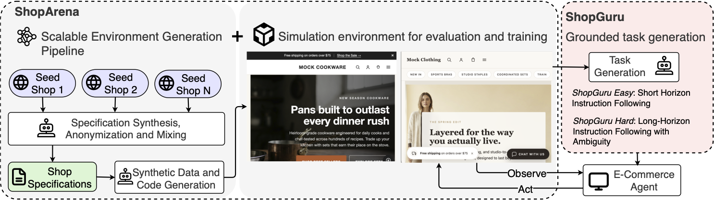
A living benchmark — tasks and sandbox shops keep growing over time.
The Problem
Realism or control — today you have to pick one
Developing and evaluating e-commerce web agents requires environments that preserve meaningful task structure while enabling controllable, reproducible, and scalable comparison. Existing methodologies force a tradeoff: live storefronts provide realism but are non-stationary, hard to inspect, and irreproducible, while hand-built sandboxes provide control but cover only a narrow range of layouts, catalogs, policies, and interaction patterns.
We argue the core bottleneck is methodological: the field lacks a scalable way to construct evaluation settings that are simultaneously realistic, diverse, controllable, inspectable, and reproducible. ShopGym bridges this gap. Its simulation layer, ShopArena, converts live seed storefronts into self-contained sandbox shops through anonymized shop specifications and a staged, validated generation process. On top of these storefronts, ShopGuru synthesizes benchmark tasks across seven skill categories, grounding each task in the shop's catalog, navigation structure, policies, and interaction affordances.
We validate the framework with graph-based structural analysis and agent-based behavioral evaluation over 224 tasks across six sandbox shops — three built from synthetic data and three from real data. The synthetic shops preserve key structural properties of live storefronts, and agent performance on synthetic shops positively correlates with performance on the live storefronts they mirror.
Grounded in real shops
Generation is calibrated on observed live storefronts — not on manuals or ungrounded LLM design choices.
Stable & resettable
Each shop is self-contained and deterministic, so training and evaluation runs are reproducible.
Inspectable by design
A human-readable specification is the control surface — edit a shop without re-exploring the source.
The Pipeline
How ShopGym works
Two complementary frameworks in one synergistic workflow: ShopArena builds the environment, and ShopGuru builds the benchmark. Both are organized as small sets of coding agents communicating through the file system, with execution–verification loops that keep long-horizon generation reliable.
ShopArena · Explore
Live storefront → anonymized specification
A planner agent decomposes exploration into focused subtasks; fresh specification agents browse the seed storefront with Playwright and write an anonymized design manual, structured attribute list, and catalog statistics. A consolidation step merges fragments — and can compose multiple seed shops into a single specification that spans diversity no individual storefront would cover.
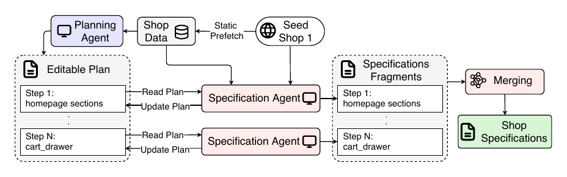
ShopArena · Generate
Specification → runnable sandbox shop
Generation reads only the specification, so it is anonymous by construction. A synthetic catalog is generated collection-by-collection, then the storefront source code is synthesized in a fixed sequence of feature-scoped steps (shell, collections, product pages, cart, search, policies). Each step runs an execution–verification loop (in the spirit of the Ralph technique): a fresh agent edits the code, then rule-based and multimodal verifiers produce natural-language feedback for the next iteration — sidestepping the context-growth failures of single long-running agents.
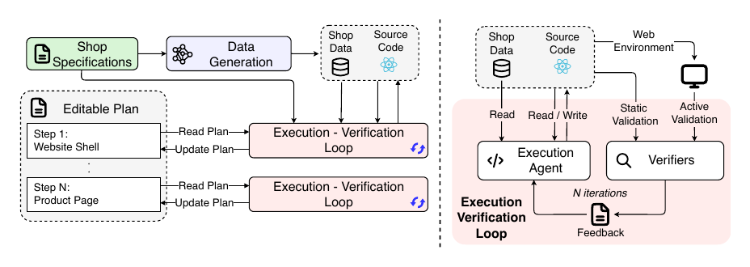
ShopGuru · Grounded task generation
Sandbox shop → verified benchmark tasks
ShopGuru consumes the shop's collections, products, pages, and statistics and emits tasks that are valid against the environment they run in. Deterministic generators produce short-horizon primitive tasks; an LLM-authored generator produces long-horizon shopping journeys, reconciled against the shop via a validator-driven polish loop. Every emitted task passes a dependency-free validator (seven core rules) before shipping.
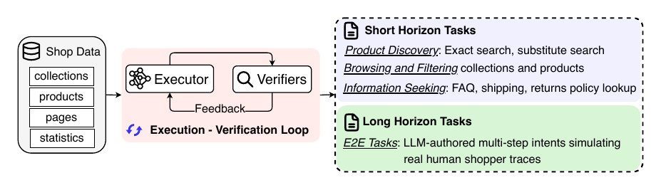
Skill Catalog
Seven skills, from primitives to journeys
ShopGuru organizes tasks into three short-horizon primitive groups and one long-horizon group. The primitives are the building blocks the long-horizon journeys re-combine.
Product Discovery
Find products by exact title or by a semantically similar alternative.
- search-exact
- search-substitute
Filter & Selection
Navigate to a collection and add to cart, optionally constrained by a realistic facet.
- browse
- filter
Information Seeking
Locate store-policy pages such as shipping, returns, and refunds.
- shipping
- returns
End-to-End Journeys
LLM-authored multi-step intents that mimic real human shopper traces: filter → sort → inspect → detour to a policy page → add to cart → edit quantity.
- e2e
Explore
Live sandbox shops
Three fully synthetic storefronts generated by ShopArena across distinct retail domains. Press play to watch an agent navigate each self-contained sandbox shop. (Login is disabled and checkout is mocked: these are research environments, not real stores.)
More sandbox shops to come.
Functional, not just visual
Generated shops contain real e-commerce surfaces — faceted filtering, promotional popups, search suggestions, and product-level purchasing controls.
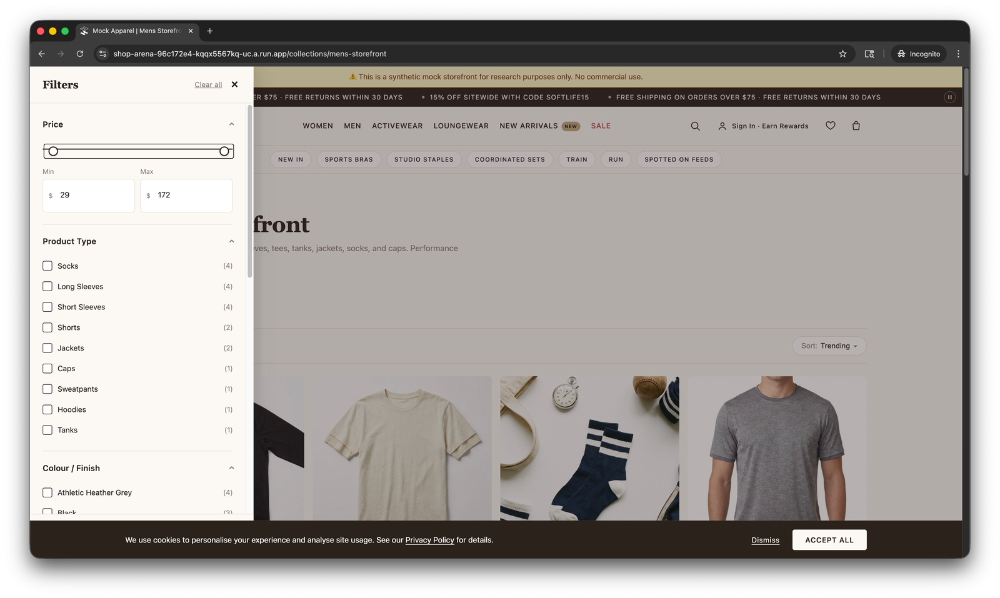
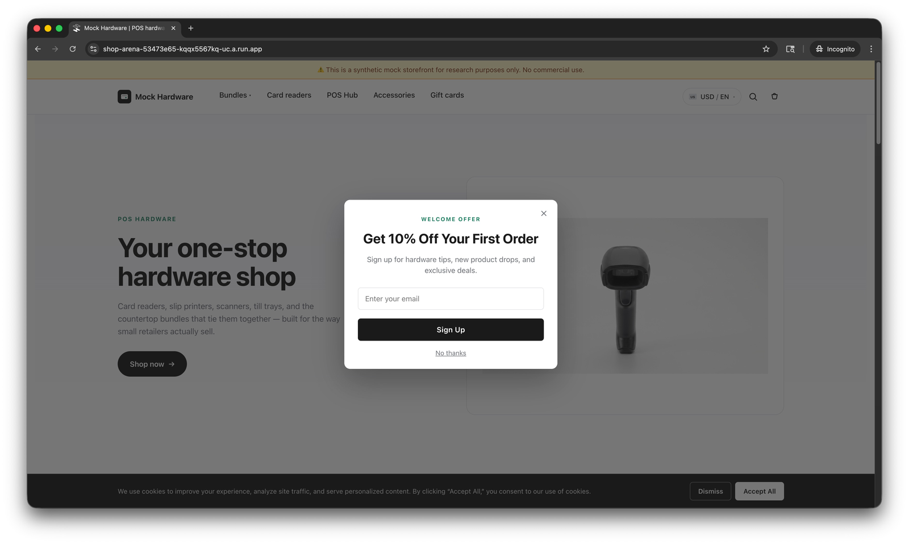
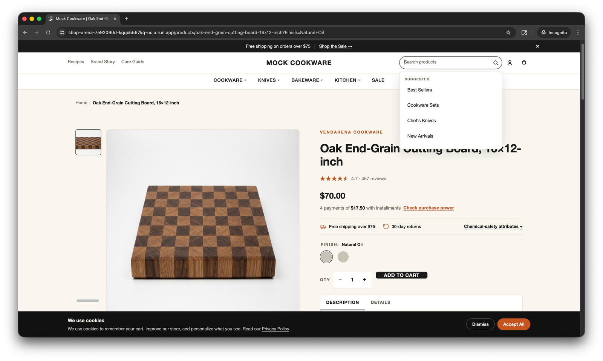
Findings
Sandbox shops keep the signal of live shops
Behavioral alignment
Across both harnesses, every model scores similarly on a real storefront and its ShopArena twin — the sandbox preserves the live-web evaluation signal.
Genuinely hard tasks
On synthetic shops, long-horizon success ranges from 47.9% (GPT-5-mini) to 62.5% (GPT-5) — far from saturated.
Structural fidelity
Synthetic shops match real storefronts in distinct-state coverage, accessibility-tree depth, and interaction affordances.
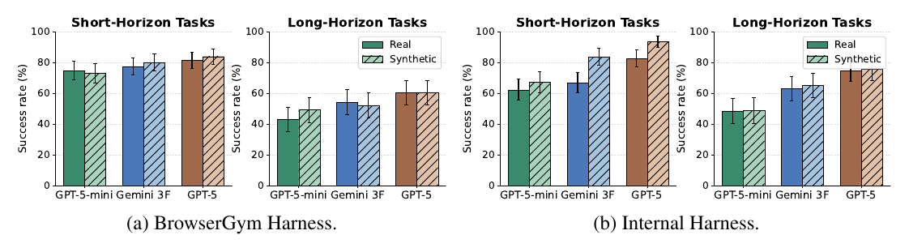
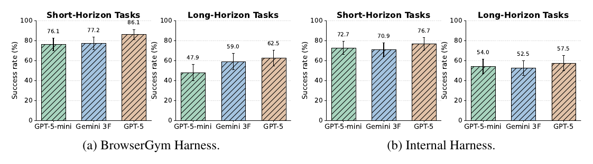
Structural validation
We treat each shop as a directed state-transition graph (left) and compare aggregate complexity against real storefronts (right). Synthetic shops match real ones in node count and interaction affordances; they show fewer edges, largely because sandboxes intentionally omit external links and marketing pages.
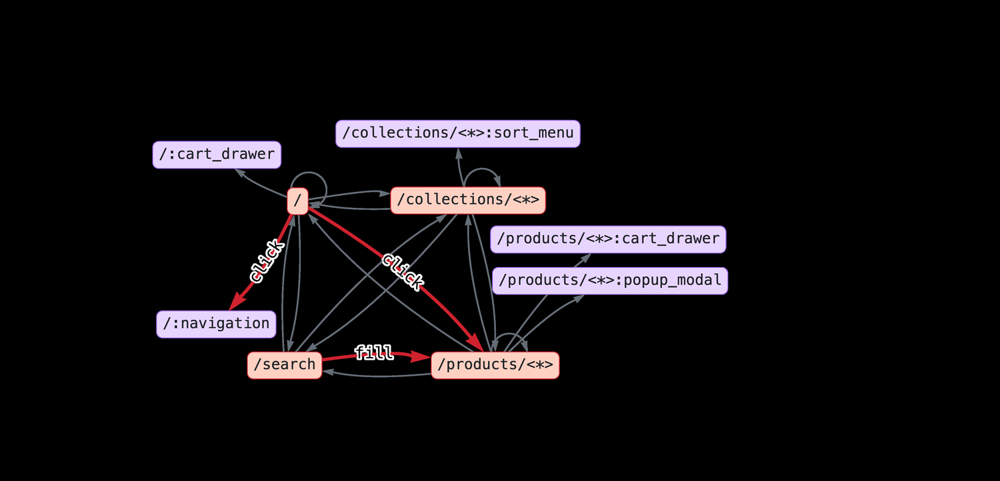
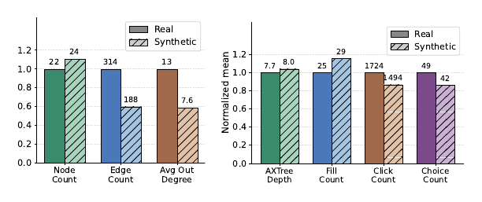
Setup. Three frontier models — GPT-5-mini, Gemini 3 Flash, and GPT-5 — evaluated under two harnesses: a BrowserGym implementation over accessibility trees and an internal multimodal harness (page projection + screenshots). GPT-5 serves as the LLM-as-judge, with a hard rule that any rollout not ended deliberately by the agent is scored as a failure.
Open Source
From a live URL to an agent benchmark in five commands
ShopGym ships as a mono-repo of four packages. A full ShopArena pipeline is explore → generate → serve, then ShopGuru builds and evaluates a grounded benchmark on top.
# 1 · Explore a live storefront → anonymized shop manual
uv run shop-explore https://example-shop.com
# 2 · Generate a self-contained SandboxShop from the manual
uv run shop-gen outputs/shop_manuals/<domain>/<run_id> --name mock_shop
# 3 · Serve the shop locally for agents to interact with
pnpm shop:host start mock_shop 4000
# 4 · Generate a grounded benchmark for the shop
uv run shop-guru build --shop mock_shop
# 5 · Evaluate an agent against the shop
uv run shop-guru eval --shop mock_shopshop_arena
Environment factory: generates deterministic, self-contained sandbox shops from any live storefront.
shop_guru
Dataset pipeline: synthesizes grounded evaluation tasks across the seven skill categories.
shop_backend
Local GraphQL API server that hosts SandboxShop catalog and navigation data.
harness
Runtime-agnostic plan-then-loop engine orchestrating agents through build and eval loops.
Citation
Cite ShopGym
@misc{savadikar2026shopgym,
title = {ShopGym: An Integrated Framework for Realistic Simulation and Scalable Benchmarking of E-Commerce Web Agents},
author = {Chinmay Savadikar and Mingyu Zhao and Yuanzheng Zhu and Han Li and Shuang Xie and Alberto Castelo and Tianfu Wu and Lingyun Wang},
year = {2026},
eprint = {2605.16116},
archivePrefix = {arXiv},
primaryClass = {cs.AI},
url = {https://arxiv.org/abs/2605.16116}
}